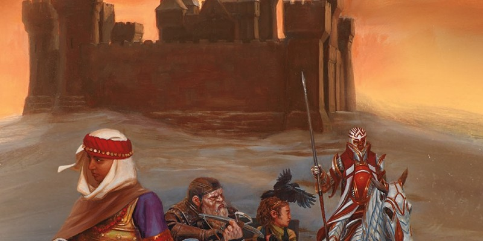

Kits AD&D 2
Si vous avez joué à AD&D 2 dans les années 90, vous vous souvenez probablement des kits. Ces options de personnages ont été introduites dans le Complete Fighter’s Handbook, et sont devenues l'un des piliers des autres livres de la série des Player’s Handbook Rules Supplement. Bien que ces kits soient connus pour avoir proposé des prestations sauvagement inégales, ils ajoutaient de la profondeur et de la personnalisation à un jeu qui n'offrait que peu de choix après le niveau 1. Ce mois-ci, Unearthed Arcana convertit quelques-uns des kits les plus populaires de cette époque pour en faire de nouvelles options de classe pour le barde et guerrier.
Barde : collège des épées
Version officielle du Xanathar's Guide to Everything de cette sous-classe publiée initialement dans la rubrique Unearthed Arcana.
Les bardes du collège des épées sont appelés des lames, et ils divertissent au moyen des prouesses martiales. Les lames effectuent des tours comme avaler des épées, lancer ou jongler avec des couteaux, ou simulent des combats. Mais s'ils utilisent leurs armes pour divertir, ce sont également des guerriers qualifiés et bien entraînés.
Leur talent martial inspire de nombreuses lames à mener une double vie. Une lame peut utiliser une troupe de cirque comme couverture pour commettre des actes répréhensibles comme l'assassinat, le vol ou le chantage. D'autres lames s'attaquent aux tyrans, rendant justice face aux cruels et aux puissants. C'est pourquoi, même si la plupart des troupes sont heureuses d'accepter le talent d'une lame pour l'excitation que cela ajoute à une représentation, seuls quelques artistes confient pleinement en eux.
Les lames qui abandonnent la vie d'artiste ont d'ailleurs souvent eu des ennuis qui ont rendu le maintien de leurs activités secrètes impossible, car une lame surprise à voler ou rendant la justice populaire est une trop grande responsabilité pour les troupes d'artistes. Alors, leurs compétences martiales étant leur plus grand atout, ces lames travaillent ensuite comme hommes de main pour une guilde de voleurs ou se lancent dans une carrière d'aventuriers.
Maîtrises supplémentaires
Lorsque vous rejoignez le collège des épées au niveau 3, vous gagnez la maîtrise des armures intermédiaires et des cimeterres.
Si vous maîtrisez une arme de corps à corps courante ou de guerre, vous pouvez l'utiliser comme focaliseur de sorts pour vos sorts de barde.
Style de combat
Au niveau 3, vous adoptez un style de combat qui est votre spécialité. Choisissez l'une des options suivantes. Vous ne pouvez pas prendre une option de Style de combat plus d'une fois, même si un élément du jeu vous permet de le faire.
Combat à deux armes. Lorsque vous vous engagez dans un combat avec deux armes en mains, vous pouvez ajouter votre modificateur de caractéristique aux dégâts de la seconde attaque.
Duel. Lorsque vous attaquez avec une arme de corps à corps dans une main et aucune autre arme, vous obtenez un bonus de +2 aux dégâts avec cette arme.
Figure de lames
Au niveau 3, vous apprenez à effectuer d'impressionnantes figures avec vos armes. Lorsque vous prenez l'action Attaquer à votre tour, votre vitesse augmente de 3 mètres jusqu'à la fin de votre tour, et si une attaque avec une arme que vous réalisez avec cette action touche une créature, vous pouvez également utiliser une des figures suivantes. Vous ne pouvez utilisez qu'une seule option de Figure de lames par tour.
Figure défensive. Vous pouvez dépenser une utilisation d'Inspiration bardique afin que la lame inflige des dégâts supplémentaires à la créature que vous venez de toucher. Lancez un dé d'Inspiration bardique ; le résultat correspond aux dégâts supplémentaires. Appliquez également le résultat comme bonus à votre CA jusqu'au début de votre prochain tour.
Figure tranchante. Vous pouvez dépenser une utilisation d'Inspiration bardique pour que votre arme inflige des dégâts supplémentaires à la créature que vous venez de toucher et à une autre créature de votre choix que vous pouvez voir et qui est située à 1,50 mètre ou moins de vous. Lancez un dé d'Inspiration bardique ; le résultat correspond aux dégâts supplémentaires.
Figure mobile. Vous pouvez dépenser une utilisation d'Inspiration bardique pour que votre arme inflige des dégâts supplémentaires à la créature que vous venez de toucher. Lancez un dé d'Inspiration bardique ; le résultat correspond aux dégâts supplémentaires. Vous pouvez également repousser la cible de 1,50 mètre de vous, plus un nombre mètres égal au nombre que vous avez obtenu avec le dé d'Inspiration bardique divisé par 3. Vous pouvez ensuite utiliser immédiatement votre réaction pour vous déplacer à votre vitesse dans un espace inoccupé à 1,50 mètre ou moins de la cible.
Attaque supplémentaire
À partir de niveau 6, vous pouvez attaquer deux fois, au lieu d'une, chaque fois que vous utilisez l'action Attaquer à votre tour.
Figure de maître
À partir du niveau 14, chaque fois que vous utilisez une option de Figure de lames, vous pouvez lancer un d6 et l'utiliser au lieu de dépenser un dé d'inspiration bardique.
Barde : collège de la satire
Les bardes du collège de la satire sont appelés des bouffons. Ils racontent de piètres histoires, osant toutes les acrobaties et les blagues les plus mordantes pour divertir leur public, que cela soit devant la foule d'une taverne délabrée sur des quais ou des nobles à la cour d'un roi. Là où d'autres bardes cherchent de vieilles histoires de bravoure ou des contes épiques à raconter, les bouffons débusquent des histoires embarrassantes et hilarantes de toutes sortes. Qu'il raconte l'histoire grivoise de la relation vigoureuse d'une duchesse âgée dans une étable ou fasse une satire moqueuse de l'innocence pitoyable d'un paladin de Heaume, le bon goût, la bienséance sociale ou la honte n’empêche jamais un bouffon de déclencher les rires.
Mais si les bouffons sont les maîtres des calembours, des plaisanteries et des joutes verbales, ils sont beaucoup plus qu'un simple soulagement comique. On attend d'eux qu'ils se moquent et provoquent, profitant du fait que même des gens les plus puissants doivent par tradition supporter les moqueries d'un bouffon avec bonne humeur. Cela permet à un bouffon d'officier comme critique ou comme voix de la raison quand d'autres seraient trop intimidés pour dire la vérité.
Pour la duchesse qui goûte des jeunes ouvriers, ce genre d'histoires pourrait servir à avertir ses cibles de ses affections et la forcer à changer ses façons par manque de partenaires consentants. Riposter au bouffon ne fait rien d'autre que ruiner une réputation déjà endommagée, et pourrait fournir la meilleure preuve que les satires du bouffon ont frappé juste. Mais si elle est bonne et généreuses avec ses conquêtes, les blagues et des histoires peuvent la faire passer pour une sorte de héros populaire, attirant à elle encore plus de partenaires potentiels.
Les bouffons ne sont fidèles qu'à une seule cause : la poursuite et la propagation de la vérité. Ils utilisent la comédie et leur apparence inoffensive pour briser les barrières sociales et dénoncer la corruption, l'incompétence et la bêtise parmi les riches et les puissants. Qu'il révèle la fraude d'un artiste escroc ou expose les plans de guerre d'un baron mu par l'avidité et la soif de sang, un bouffon sert de conscience à un royaume.
Les bouffons se lancent à l'aventure pour protéger les gens du commun et saper les plans des riches, des puissants et des arrogants. Leur magie renforce les esprits de leurs alliés tout en jetant le doute dans celui de leurs ennemis. Parmi les bardes, les bouffons sont des acrobates inégalés, et leur capacité à dégringoler, esquiver, sauter et grimper en fait des adversaires difficiles à attraper dans une bataille.
Maîtrises supplémentaires
Lorsque vous rejoignez le collège de la satire au niveau 3, vous gagnez la maîtrise des outils de voleur. Vous obtenez aussi la maîtrise de la compétence Escamotage et la maitrise d’une compétence de votre choix. Si vous maîtrisez déjà les outils de voleur ou la compétence Escamotage, choisissez autant d'autres compétences à la place.
Fou cascadeur
Au niveau 3, vous maîtrisez de nombreuses techniques d’acrobaties qui vous permettent d’éviter les dangers. En utilisant une action bonus vous pouvez faire des cascades. Quand vous faites des cascades, vous obtenez les avantages suivants jusqu’à la fin de votre tour :
- Vous gagnez les avantages de prendre les actions Foncer et Se Désengager.
- Votre vitesse d’escalade devient égale à votre vitesse de déplacement courante.
- En cas de chute, vous ne subissez que la moitié des dégâts.
Intuition du fou
Au niveau 6, votre capacité à rassembler des histoires et des contes devient surnaturelle. Vous pouvez lancer le sort détection des pensées un nombre de fois égal à la valeur de votre modificateur de Charisme. Vous regagnez les utilisations dépensées de cette capacité après un repos long. Si une créature résiste à votre tentative d’intrusion et réussi son jet de sauvegarde contre votre détection des pensées, elle subit tout de même un effet embarrassant en public : lâcher un pet ou un rot tonitruant, trébucher et tomber, se sentir obligé de raconter une blague pourrie, etc.
Chance du fou
Les bouffons semblent avoir un don pour se sortir des situations difficiles, transformant un échec à priori évident en un succès certain, quoi qu’embarrassant. Au niveau 14, vous pouvez dépenser une utilisation de votre Inspiration bardique après avoir raté un jet de caractéristique, un jet de sauvegarde ou un jet d’attaque. Lancez un dé d’Inspiration bardique, ajoutez le résultat obtenu au jet raté, et utilisez ce nouveau résultat. Si l’utilisation de cette capacité vous permet de réussir le jet précédemment raté, notez le résultat de votre dé d'Inspiration bardique. Le MD pourra alors appliquer ce résultat en tant que malus à un jet d’attaque ou de compétence, et vous ne pourrez par réutiliser cette capacité avant de souffrir de ce malus. Lorsque le MD décidera d’appliquer ce malus, vous devrez décrire une gaffe ou une erreur embarrassante qui sera associé au jet de dé.
Guerrier : cavalier (v2)
L'archétype du cavalier excelle au combat monté. Habituellement né parmi la noblesse et élevé à la cour, un cavalier est aussi à l'aise menant une charge de cavalerie que menant la repartie lors d'un dîner d'état. Les cavaliers apprennent également à protéger ceux dont ils ont la charge, souvent en tant que protecteurs de leurs supérieurs et des plus faibles. Que cela soit pour combattre le mal ou gagner du prestige, beaucoup de ces guerriers quittent leur vie confortable pour se lancer dans de glorieuses aventures.
Maîtrises supplémentaires
Lorsque vous choisissez cet archétype au niveau 3, vous obtenez la maîtrise d'une compétence de votre choix parmi : Dressage, Histoire, Intuition, Représentation ou Persuasion. Vous pouvez également opter pour une langue de votre choix à la place d'une compétence.
Né en selle
À partir du niveau 3, votre maîtrise de l'équitation est évidente. Vous avez un avantage aux jets de sauvegarde effectués pour éviter d'être désarçonné. Si vous êtes néanmoins désarçonné, vous pouvez automatiquement atterrir sur vos pieds si vous n'êtes pas incapable d'agir et que vous tombez de moins de 3 mètres. De plus, monter ou descendre d'une créature ne vous coûte que 1,50 mètre de mouvement au lieu de la moitié de votre vitesse de déplacement.
Supériorité au combat
Quand vous choisissez cet archétype au niveau 3, vous apprenez des manœuvres qui utilisent des dés spéciaux nommés « dés de supériorité ».
Dés de supériorité. Vous avez quatre dés de supériorité, qui sont des d8. Un dé de supériorité est dépensé quand vous l’utilisez. Vous regagnez tous vos dés de supériorité dépensés lorsque vous terminez un repos court ou long. Vous gagnez un dé de supériorité supplémentaire au niveau 7 ainsi qu’au niveau 15.
Manœuvres. Vous utilisez vos dés de supériorité pour effectuer des manœuvres. Vous pouvez utiliser plusieurs manœuvres par tour, mais qu'une seule par attaque. Vous connaissez les manœuvres suivantes :
- Contrôler une monture. Lorsque vous faites un jet de Sagesse (Dressage) pour influencer une créature que vous ou un allié montez, vous pouvez dépenser un dé de supériorité, le lancer et ajouter le résultat au jet de Sagesse. Vous pouvez le faire avant ou après avoir lancé le d20, mais avant d'appliquer les résultats au jet de Sagesse.
- Attaque de précision. Lorsque vous faites une attaque avec une arme contre une créature, vous pouvez dépenser un dé de supériorité, le lancer et l'ajouter au jet d'attaque. Vous pouvez utiliser cette capacité avant ou après avoir lancé le d20, mais avant qu'un des effets de l'attaque ne soit appliqué.
- Faire tomber. Lorsque vous touchez créature lors d'une attaque avec une arme, vous pouvez dépenser un dé de supériorité pour essayer de faire tomber à terre la cible. Lancer le dé ajoutez-le au jet de dégâts de l'attaque. Si la cible est de taille G ou plus petite, elle doit également réussir sur un jet de sauvegarde de Force (DD 8 + votre bonus de maîtrise + votre modificateur de Force) ou tomber à terre.
- Manœuvre de protection. Si vous ou une créature dans un rayon de 1,50 mètre autour de vous êtes touché par une attaque, vous pouvez dépenser un dé de supériorité en réaction si vous brandissez une arme ou un bouclier. Lancer le dé et ajoutez le résultat à la CA de la cible contre cette attaque. Si l'attaque touche toujours, la cible a une résistance contre les dégâts de l'attaque.
Charge féroce
Au niveau 7, vous obtenez des avantages supplémentaires lorsque vous utilisez la manœuvre Faire tomber. Vous pouvez dépenser jusqu'à deux dés de supériorité et les ajouter au jet de dégâts. Dans ce cas, la cible a un désavantage à son jet de sauvegarde pour éviter de tomber à terre.
Supériorité au combat améliorée
À partir du niveau 10, vos dés de supériorité deviennent des d10. À partir du niveau 18 ils deviennent des d12.
Implacable
À partir du niveau 15, si lorsque vous lancez votre jet d’initiative vous n’avez plus de dés de supériorité disponibles, vous en regagnez un.
Guerrier : éclaireur
L'archétype de l'éclaireur excelle pour trouver un passage sûr à travers des régions dangereuses. Les éclaireurs préfèrent généralement les armures légères et les armes à distance, mais ils sont également à l'aise avec du matériel plus lourd lorsqu'ils sont confrontés à des combats intenses.
Maîtrises supplémentaires
Lorsque vous choisissez cet archétype au niveau 3, vous obtenez la maîtrise de trois des compétences suivantes : Acrobaties, Athlétisme, Discrétion, Investigation, Médecine, Nature, Perception ou Survie. Vous pouvez également choisir la maîtrise des outils des voleurs à la place de la maîtrise d’une compétence.
Supériorité au combat
Au niveau 3, vous gagnez un ensemble de capacités qui s'alimentent par des dés particuliers nommés dés de supériorité.
Dé de supériorité. Vous possédez quatre dés de supériorité, des d8. Un dé de supériorité est dépensé lorsque vous l’utilisez. Vous récupérez tous vos dés de supériorité utilisés lorsque vous terminez un repos court ou long. Vous gagnez un dé de supériorité supplémentaire au niveau 7 et un autre au niveau 15.
Utiliser un dé de supériorité. Vous pouvez dépenser 1 dé de supériorité afin d’obtenir différents avantages :
- Lorsque vous faîtes un jet qui vous permet d'appliquer votre bonus de maîtrise en Athlétisme, Nature, Perception ou Survie, vous pouvez dépenser un dé de supériorité afin d’ajouter la moitié du résultat de ce dé (arrondi à l’entier supérieur) à votre jet. Vous pouvez appliquer ce bonus après avoir effectué votre jet, mais avant de savoir s’il était réussi ou non.
- Lorsque vous attaquez une créature avec une arme, vous pouvez dépenser un dé de supériorité afin d’ajouter le résultat de celui-ci à votre jet d'attaque. Vous pouvez utiliser cette capacité avant ou après avoir effectué votre jet d’attaque, mais avant que les effets de l’attaque ne prennent effet.
- Si vous êtes touché par une attaque alors et que vous portez une armure légère ou moyenne, vous pouvez utiliser votre réaction pour dépenser un dé de supériorité et ajouter son résultat à votre CA. Si malgré cela l'attaque est réussie, vous ne subissez que la moitié des dégâts.
Explorateur-né
Au niveau 3, vous gagnez la capacité de rôdeur Explorateur-né, hormis la différence suivante : vous choisissez un terrain favori supplémentaire au niveau 7 et au niveau 15.
Supériorité au combat améliorée
Au niveau 10, vos dés de supériorité deviennent des d10. Au niveau 18, ils deviennent des d12.
Implacable
À partir du niveau 15, lorsque vous effectuez un jet d’initiative et n’avez plus de dé de supériorité en réserve, vous regagnez 1 dé de supériorité.

Écrit par Mike Mearls, traduit par blueace et toon